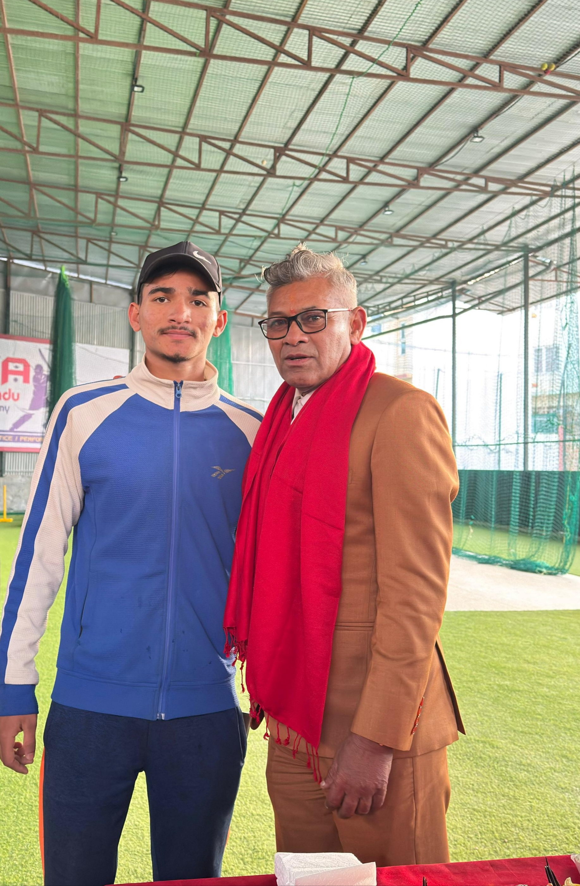
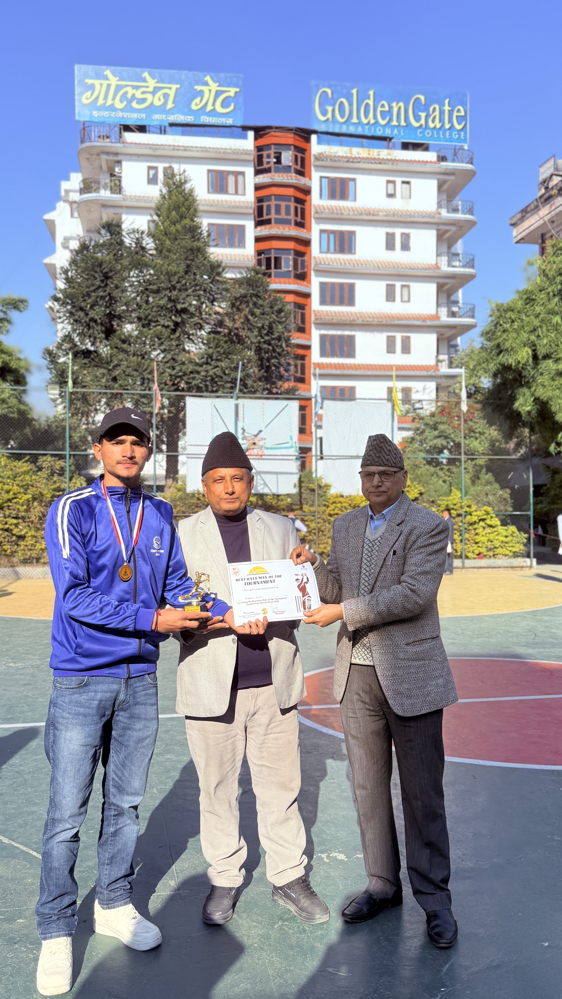

NIRDESHAN
KUNWAR
Digital Creator • Cricketer • CS Student
Digital Creator • Cricketer • CS Student
Nirdeshan Kunwar is a student of Computer Science at GoldenGate College and a dedicated cricketer currently training at Kathmandu Cricket Academy in Kathmandu, Nepal. He is known for his disciplined lifestyle, strong work ethic, and commitment to continuous improvement both in sports and academics.
As a young cricketer, Nirdeshan focuses on developing his batting skills, match awareness, and overall fitness while working every day to move closer to his goal of playing cricket at a professional level. His passion for the sport is reflected in his consistent training, competitive mindset, and determination to perform under pressure.
He is the son of Devraj Kunwar and Kaushilla Kunwar, whom he proudly considers the best parents and a constant source of motivation in his life.
"Dream without limits, Work without excuses, Fail with courage, Rise with purpose, Leave a legacy that inspires."



